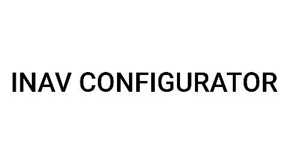
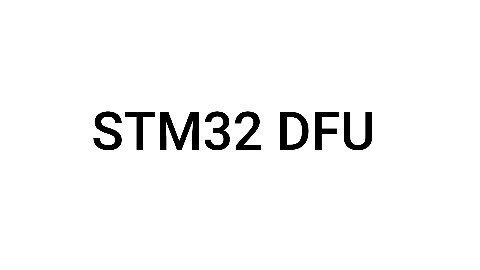

SAS Planet v.200606
программа для работы с картами, основным предназначением для БЛАшника является то, что с помощью этой программы можно подготавливать карты для вашей наземной станции управления.
При поддержке
Это вложение из поста t.me/techuav/20893/20898
VLC Player v.3.0.21
Видеоплеер для воспроизведения видеозаписей
↪️
у
При поддержке
Это вложение из поста t.me/techuav/20893/20901
ExpressLRS Configurator v.1.7.7
Предназначена для сборки прошивок для оборудования ELRS (приёмник/передатчик).
Для работы необходим интернет
↪️
При поддержке
Это вложение из поста t.me/techuav/20893/21097

EdgeTX Flasher
Предназначена для обновления прошивки пультов и оптимизации резервных копий.
Более простая альтернатива EdgeTX Companion, со следующими предназначениями:
- загрузка и сохранение прошивки,
- настройка тем и постоянное хранилище конфигураций,
- прошивка в режиме DFU,
- автоматическая загрузка и настройка SD-карты.
↪️
При поддержке
Это вложение из поста t.me/techuav/20893/21096
Zadig v.2.9
Для загрузки и восстановления драйверов полётного контроллера.
Для работы необходим интернет
↪️
При поддержке
Это вложение из поста t.me/techuav/20893/21098
BetaFlight v.10.10.0
Предназначено для отладки БпЛА мультироторного типа
↪️
При поддержке
Это вложение из поста t.me/techuav/20893/21101
ImpulseRC
Для установки DFU драйверов (загрузочных) полетного контролера на компьютер.
Драйвера нужны для подключения пол1тника в режиме загрузки и обновления прошивки.
Программа просто в эксплуатации: подключил полётник к компьютеру, запустил программу и ждать когда всё пройдет в автоматичеком режиме.
↪️
При поддержке
Это вложение из поста t.me/techuav/20893/21102
STM32 Virtual COM Port Driver
Драйвер виртуального COM-порта для микроконтроллеров STM32, разработанный компанией STMicroelectronics. Он позволяет реализовать обмен данными между микроконтроллером и компьютером через USB-кабель, имитируя физический COM-порт.
↪️
При поддержке
Это вложение из поста t.me/techuav/20893/21104
STM32 Virtual COM Port Driver
Драйвер виртуального COM-порта для микроконтроллеров STM32, разработанный компанией STMicroelectronics. Он позволяет реализовать обмен данными между микроконтроллером и компьютером через USB-кабель, имитируя физический COM-порт.
↪️
При поддержке
Это вложение из поста t.me/techuav/20893/21104

INAV Configurator
Программа, предназначена для отладки вашего БпЛА мультироторного типа, более прокаченная версия BetaFlight
↪️
При поддержке
Это вложение из поста t.me/techuav/20893/21112

STM32 DFU
Предназначен для обновления прошивки напрямую через USB-порт.
↪️
При поддержке
Это вложение из поста t.me/techuav/20893/21114
STM32 DFU
Предназначен для обновления прошивки напрямую через USB-порт.
↪️
При поддержке
Это вложение из поста t.me/techuav/20893/21114

Edge TX Companion v.2.10.3
Программа для конфигурирования аппаратуры управления (пульта).
Позволяет конфигурировать аппаратуру управления (пульт).
С помощью программы можно обновить прошивку, сделать резервную копию.
↪️
При поддержке
Это вложение из поста t.me/techuav/20893/21186
PID Tool Box Pro
v.0.71
Предназначена для просмотров log-файлов вашего полётного контроллера и анализа для более точной настройки PIDов
↪️
При поддержке
Это вложение из поста t.me/techuav/20893/21187
TBS Agent v.4
Программа предназначена для настройки, обновления приёмников и передатчиков, которые работают на TBS
↪️
При поддержке
Это вложение из поста t.me/techuav/20893/21188
DJI Battery Killer
Программа для разблокировки и восстановления АКБ от DJI
↪️
При поддержке
Это вложение из поста t.me/techuav/20893/22428
RadioPlanner
Программа для планирования сетей связи
При поддержке
Это вложение из поста t.me/techuav/20893/22429
Advanced Password Generation
Программа для генерирования паролей/ключей шифрования различной сложности
↪️
При поддержке
Это вложение из поста t.me/techuav/20893/22430

OBS Studio
Программа для осуществления трансляции и записи экрана.
При поддержке
Это вложение из поста t.me/techuav/20893/22435
CapCut
Видеоредактор ваших записей с БпЛА
При поддержке
Это вложение из поста t.me/techuav/20893/22437
Программы для Windows
Веб-страница создана автоматически на основе поста пользователя ТЭЧ БпЛА | FPV